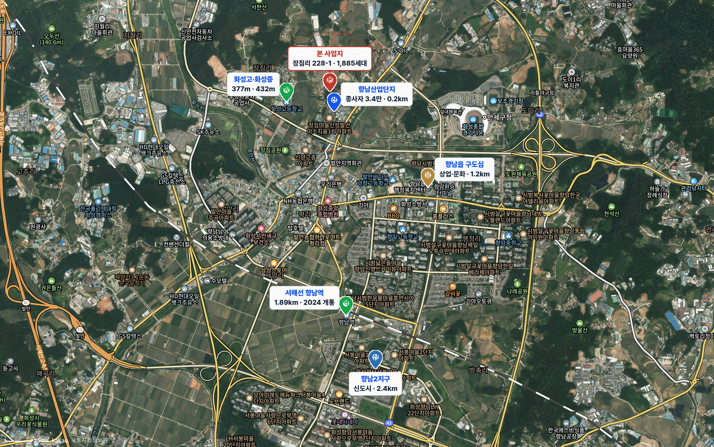
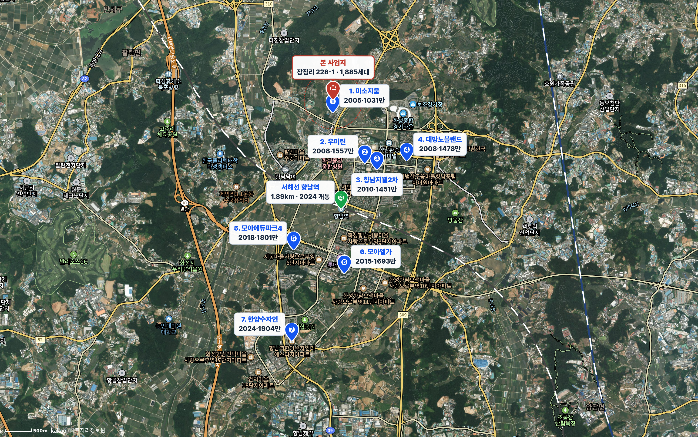

| 타입 | 전용(㎡) | 세대수 | 비중 |
|---|---|---|---|
| 59A | 59.92 | 336 | 17.8% |
| 84형 | 84.95 | 1,549 | 82.2% |
| 계 | — | 1,885 | 100% |

| 구분 | 핵심 지표 | 보조 지표 |
|---|---|---|
| 직주 | 향남산단 0.2km 연접 산단 종사자 1.9만명 | 발안 8,252 · H-테크노 6,300 향남제약 4,757명 · 통근율 62% |
| 교육 | 화성고 377m · 화성중 432m 도보권 | 1km 내 학교 4곳 3km 내 14곳 |
| 교통 | 서해선 향남역 1.89km 향남환승터미널 1.21km | 서해안고속 · 39·43번 국도 비교단지 수자인 2.43km |
| 편의 | 홈플러스 향남점 1.4km 향남문화의집 1.1km | 1km 내 의료 11 · 편의점 12 은행 11곳 |
| 지역 | 거래건수 | 매매가 중간값 | 전용 평단가 |
|---|---|---|---|
| 새솔동 (송산그린시티) | 209 | 540,000 | 21,170 |
| 남양읍 | 272 | 387,000 | 15,170 |
| 향남읍 ·대상지 | 232 | 350,000 | 13,620 |
| 화성시 전체 | 745 | 397,000 | 15,560 |
| 분양 시작 후 | 1개월 | 6개월 | 12개월 | 24개월 | 준공 |
|---|---|---|---|---|---|
| 누적 분양율 | 20% | 53% | 75% | 99% | 100% |
| 단계 | 규모 | 근거·출처 |
|---|---|---|
| ① 배후 고용 모수 | 34,000명 | 향남·발안산단 종사자 (시장조사) |
| ② 지역 거주 성향 | 62% | 지역 내 통근율 (시장조사) |
| ③ 향남권 유효수요 | 3,800세대 | 시장조사 산정 [추정] |
| ④ 화성시 연 분양 | 8,000세대 | 연간 기준 (시장조사) |
| ⑤ 필요 분양량 | 연 942세대 | 1,885 ÷ 2년 (사업수지 기준) |
| ⑥ 요구 점유율 | 11.8% | = 942 ÷ 8,000 ← 판단 기준 |
| 항목 | 현황 | 영향 |
|---|---|---|
| 대출규제 | 6·27 수도권 주담대 6억 한도 + 스트레스 DSR 3단계 1.50% | 자금여력↓ 집값 최대변수 87.5% |
| 금리 | 2026.7 기준금리 2.75%로 인상(3년 반 만 첫 인상) | 조달·이자 상방 긴축 전환 |
| 증시 | 반도체發 −20%대 조정(6.23 서킷브레이커) | 투자심리 위축 |
| 환율 | 원달러 1,560원(17년 만 최고) | 공사비 상방 |

| № | 단지 | 준공 | 평단가 공급 | 전용 (참고) |
|---|---|---|---|---|
| 1 | 미소지움 | 2005 | 7,670 | 10,310 |
| 2 | 우미린 | 2008 | 11,580 | 15,570 |
| 3 | 향남지웰 2차 | 2010 | 10,790 | 14,510 |
| 4 | 대방노블랜드 | 2008 | 11,000 | 14,780 |
| 5 | 모아에듀파크4 | 2018 | 13,400 | 18,010 |
| 6 | 모아엘가 | 2015 | 12,590 | 16,930 |
| 7 | 한양수자인 신축 | 2024 | 14,160 | 19,040 |
| 구분 | 평가항목 | 가중 | 당 PJT | 수자인 | 모아4 |
|---|---|---|---|---|---|
| 입지 가중 55 | 주거선호(지역위계) | 20 | 16 | 20 | 18 |
| 교통환경 ·당 1.89<수 2.43km | 10 | 8 | 6 | 9 | |
| 교육환경 ·화성고 377m | 10 | 10 | 8 | 9 | |
| 생활편의 ·상업 1.4km | 5 | 3 | 5 | 4 | |
| 주거환경 | 5 | 4 | 4 | 4 | |
| 직주근접 ·산단 0.2km | 5 | 5 | 3 | 3 | |
| 미래 가중 5 | 개발호재 | 5 | 4 | 4 | 4 |
| 상품 가중 40 | 단지규모 ·1,885세대 | 10 | 10 | 8 | 8 |
| 노후도 | 10 | 10 | 10 | 8 | |
| 브랜드 ·대단지=메이저 유치 | 10 | 9 | 8 | 8 | |
| 상품구성 ·주차 139% | 10 | 9 | 8 | 8 | |
| 합계 | 100 | 88 | 84 | 83 | |
| 비교사례 | 실거래 | 지수 | 산출 |
|---|---|---|---|
| 한양수자인 2024 | 14,160 | 104.8% | 14,834 |
| 모아에듀파크4 2018 | 13,400 | 106.0% | 14,207 |
| 14,000 | 사업수지 확정 분양가 · 공급면적 기준 (84형 483,595천원/세대) |
| 14,160 | 한양수자인(2024) 국토부 실거래 중간값 |
| 14,521 | 요인비교 88점 → 지수 104.8~106% 적정 가격 중간값 |
| 15,300 | 시장조사(리버티랜드) 요인비교법 제시가 |
| 분양가 (천원/평) | 분양매출 | 사업이익 | 증감 |
|---|---|---|---|
| 14,000 제시 가격 | 868,033,339 | 98,895,615 | — |
| 14,521 적정 가격 | 900,336,581 | 128,453,080 | +29,557,465 |
| 15,300 시장조사 | 948,636,435 | 172,647,448 | +73,751,833 |
| 항목 | 영향 · 크기 | 등급 |
|---|---|---|
| 금융비 산정방식 대출·신탁사 자체자금 | 방식에 따라 117,750,851 ~ 151,504,932천원 +338억원 → 이익 989억↔576억원 · 수익률 6.7~10.8% ★최대변수 | 높음 |
| 공사비 단가 시공사 미정 | 건축비 451,161백만원 · 평당 약 5,021천원(연면적) ±5% → 이익 ∓약 226억원 [추정] | 높음 |
| 분양 진행 연 942세대 | 2년 99% 분양 전제 6개월 지연 → PF이자 −82억원 | 중간 |
| 부가세 정산 로직 면세분 이중차감 | 정정 시 −120억원 → 이익 869억(9.5%) 국민주택 면세는 법정 — 산정방법 선택 여지 없음 · 세무대리인 확인 | 높음 |
| 인허가 변경 승인 진행 | 착공·분양 시점 변동 일정 지연 시 금융비 증가 | 중간 |
| 분양가 14,000천원/평 | 실거래 적정 가격대(14,000~14,200) 근접 상방 여지 제한적 · 상향 시 분양 속도와 상충 | 낮음 |
| 분양성 | 있음 — 요인비교 14,521 · 신축 실거래 14,160 · 시장조사 15,300 3개 산출값 편차 ±6% 내 수렴 → 가격대 신뢰 가능 |
| 가격수준 | 제시 14,000 = 적정가 −3.6% 보수 시장조사 15,300은 +5.4% — 소폭 고평가이나 허용 범위 |
| 사업성 | 있음 — 보수 시나리오에서도 세전 흑자 (576억원 · 6.70%) 낙관 989억(10.8%) · 금융조건 확정 시 확정 |
| 분양 | 연 942세대 · 2년 — 화성시 분양의 11.8% '26~'28 공급부족(−5,134~−7,689세대)이 뒷받침 |
| 1 | 금융조건(대출·신탁사 자체자금) 확정 ★ 금융비 1,178~1,515억원 → 수익률 6.7~10.8% 좌우 · 최우선 |
| 2 | 부가세 정산 로직 정정 ★ 면세분 이중차감 → −120억(이익 869억·9.5%) · 세무대리인 확인 |
| 3 | 시공사 공사비 확정 + 도급계약 VAT 조항 평당 5,021천원 · ±5% → ∓226억원 / 국민주택 면세·근생 과세 구분 발행 조항 필수 |
| 4 | 분양 전략 (연 942세대) 향남 16년 공급공백 = 대기수요 / 흡수력 실적 부재 · 6개월 지연 −82억원 |